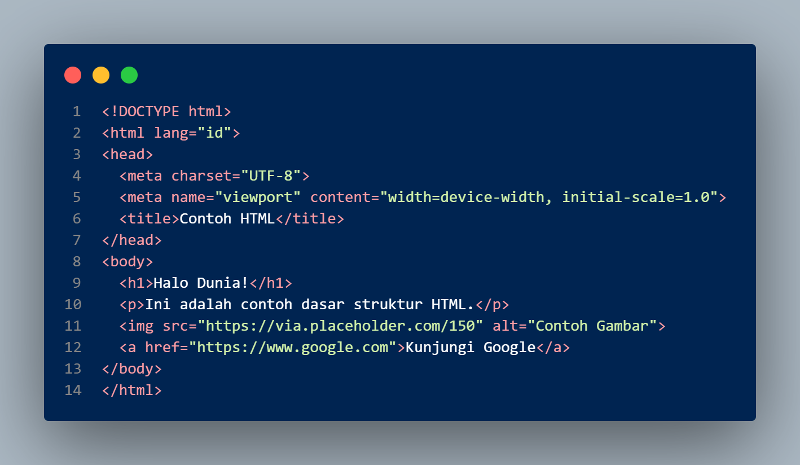

Berikut adalah penjelasan singkat mengenai empat komponen utama dalam membuat website modern:
-
🧱 1. HTML (HyperText Markup Language)
📖 Pengertian:
HTML adalah bahasa dasar yang digunakan untuk membangun struktur dari sebuah halaman web. Ia berfungsi sebagai kerangka utama yang menampung seluruh elemen seperti teks, gambar, tabel, video, tautan, dan tombol. Setiap elemen diatur menggunakan tag-tag tertentu. Tanpa HTML, browser tidak akan tahu bagaimana menampilkan konten halaman, sebab HTML berperan sebagai fondasi utama dari seluruh tampilan situs web.
⚙️ Fungsi utama:
Fungsi utama HTML adalah membentuk struktur dan susunan konten pada halaman web agar bisa ditampilkan secara teratur dan mudah dipahami oleh pengguna maupun mesin pencari. HTML memungkinkan pengembang menentukan bagian-bagian penting dari sebuah situs seperti header, body, dan footer. Ia juga menjadi wadah bagi teknologi lain seperti CSS dan JavaScript untuk bekerja menambahkan tampilan dan interaktivitas, sehingga menciptakan pengalaman pengguna yang utuh dan menarik.
💻 Contoh Kode HTML:

-
🨠2. CSS (Cascading Style Sheets)
📖 Pengertian:
CSS adalah bahasa yang digunakan untuk mengatur tampilan visual dari elemen-elemen HTML. Jika HTML adalah kerangkanya, maka CSS adalah pakaian dan gaya yang membuat halaman web terlihat menarik. Dengan CSS, pengembang dapat mengatur warna, jenis huruf, tata letak, jarak antar elemen, dan efek animasi yang memperindah tampilan website.
⚙️ Fungsi utama:
Fungsi utama CSS adalah memisahkan antara konten dan tampilan visual agar lebih mudah dikelola. Dengan CSS, perubahan desain dapat dilakukan secara efisien tanpa mengubah struktur HTML. Selain itu, CSS memungkinkan desain web yang responsif, yaitu tampilan situs yang otomatis menyesuaikan ukuran layar perangkat seperti komputer, tablet, atau smartphone. Hal ini membuat pengalaman pengguna menjadi lebih nyaman dan konsisten di berbagai perangkat.
💻 Contoh Kode CSS:
-
⚡ 3. JavaScript
📖 Pengertian:
JavaScript adalah bahasa pemrograman yang membuat halaman web menjadi interaktif dan dinamis. Tidak seperti HTML dan CSS yang bersifat statis, JavaScript memungkinkan halaman web bereaksi terhadap tindakan pengguna seperti klik, input teks, atau pergerakan mouse. Ia juga digunakan untuk mengatur data, membuat animasi, hingga berkomunikasi dengan server tanpa harus memuat ulang halaman.
⚙️ Fungsi utama:
Fungsi utama JavaScript adalah menambahkan logika dan interaktivitas ke dalam halaman web. Dengan JavaScript, pengembang dapat membuat fitur-fitur seperti menu drop-down, slideshow gambar, validasi formulir, serta berbagai efek visual menarik. Selain itu, JavaScript menjadi dasar bagi banyak framework modern seperti React, Vue, dan Angular yang digunakan untuk membangun aplikasi web kompleks dan real-time.
💻 Contoh Kode JavaScript:
-
💠4. Tailwind CSS
📖 Pengertian:
Tailwind CSS adalah framework CSS modern yang berbasis pada sistem utility-first, artinya ia menyediakan kumpulan class siap pakai seperti bg-blue-500, text-center, atau rounded-lg yang bisa langsung digunakan di HTML. Dengan pendekatan ini, pengembang tidak perlu menulis CSS panjang dari nol, melainkan tinggal menggabungkan class sesuai kebutuhan desain.
⚙️ Fungsi utama:
Fungsi utama Tailwind CSS adalah mempercepat proses pembuatan desain web yang modern dan responsif. Framework ini membantu pengembang menciptakan tampilan profesional dengan efisien, konsisten, dan mudah dikustomisasi. Tailwind juga sangat fleksibel karena mendukung tema, warna, dan ukuran yang bisa diatur sesuai kebutuhan proyek. Dengan struktur modularnya, Tailwind membuat proses desain lebih cepat tanpa mengorbankan kualitas visual.
💻 Contoh Kode Tailwind CSS:
-
🧩 Kesimpulan
HTML, CSS, JavaScript, dan Tailwind CSS merupakan empat komponen utama yang saling melengkapi dalam pembuatan website modern.
HTML berperan sebagai kerangka dasar yang menyusun struktur konten halaman web. CSS kemudian memperindah tampilan dengan mengatur warna, ukuran, tata letak, dan gaya visual agar lebih menarik bagi pengguna. Selanjutnya, JavaScript menambahkan interaktivitas dan logika dinamis, memungkinkan pengguna untuk berinteraksi langsung dengan elemen-elemen web seperti tombol, formulir, atau animasi.
Sementara itu, Tailwind CSS hadir sebagai alat bantu modern yang mempermudah proses styling dengan sistem class cepat dan efisien, sehingga pengembang dapat membuat desain profesional tanpa harus menulis kode CSS dari awal.
Secara keseluruhan, keempat komponen ini bekerja secara harmonis: HTML membangun, CSS menghias, JavaScript menghidupkan, dan Tailwind CSS mempercepat proses desain. Dengan memahami dan menguasai semuanya, seseorang dapat menciptakan website yang tidak hanya fungsional, tetapi juga indah, interaktif, dan responsif di berbagai perangkat.